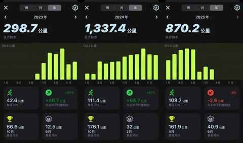
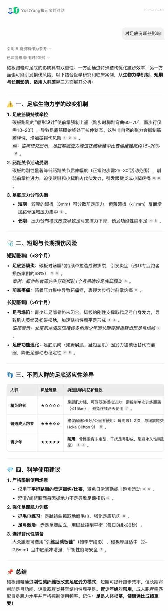
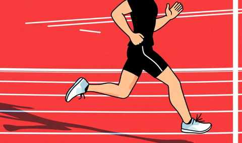
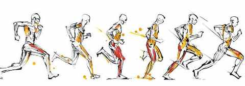
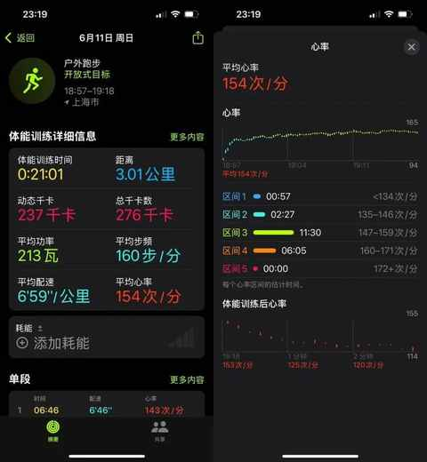
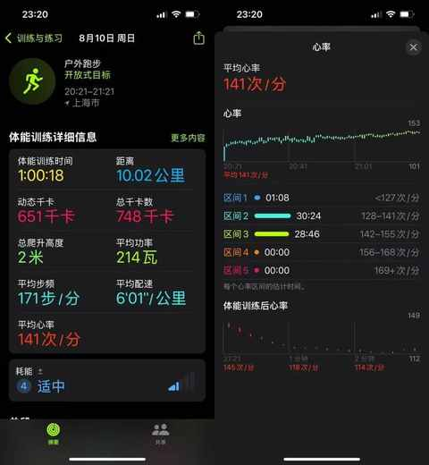

27 个月，2500km 实测，跑步新手踩坑指北
约斯特普通
2025-08-10
自 23 年开始跑步两年以来多，跑了 2500km。

作为一个跑步新手，网上提到的坑基本都踩到了，想要进步想提高想长期坚持做一件事，踩坑总是难免的，希望你能 完美避开 我下面提到的几个坑。
第一个坑：沉迷 跑步装备
在入门前期特别喜欢看各种运动博主和测评博主的分享，再结合着各个平台的算法，很快你的跑步装备就够你用好几年的咯。
装备包含且不限于下面这些：
- 跑步鞋
- 跑步袜
- 跑步帽
- 短裤
- 背心
- 速干 T 恤
每一样有 2-3 个能替换着用即可应对 99% 的场景。
第二个坑：高频穿碳板鞋
新手真不需要碳板鞋，但架不住各大品牌在各大平台的海量宣传，全民碳板都成了口号，自然看到的人们会跃跃欲试。

对于新手而言，碳板鞋虽然能带来速度的提升，但这把双刃剑的另一面是对足底的不良影响。
第三个坑：忽视常识
在刚开始跑步取得一点点进步的时候，容易自信爆棚，首当其冲的就是想模仿运动员和资深跑者的优雅跑姿。

明明自己也是收紧核心、勾脚、大幅摆臂，但完全不用其他人帮忙拍照就知道和参考对象不一样，完美的东施效颦。
造成出现这种情况的原因是对一个 重要 常识的忽视：
他们的跑姿是跑快了之后的自然状态，而非刻意为之！

第四个坑：不控心率
下图是两年多前刚开始跑步的时候的数据：
3km、平均心率 154、7分配

刚开始跑的容易接着一股热情坚持跑，即使心率偏高也撑着不降速以为跑的越来越快才是进步。
殊不知要长期 健康 的跑步，前期抛开对速度的执念把心率控制在合理范围内容才是长期且正确的事情。
下图是今天晚上跑的 10km：
10km、平均心率141、6分配
